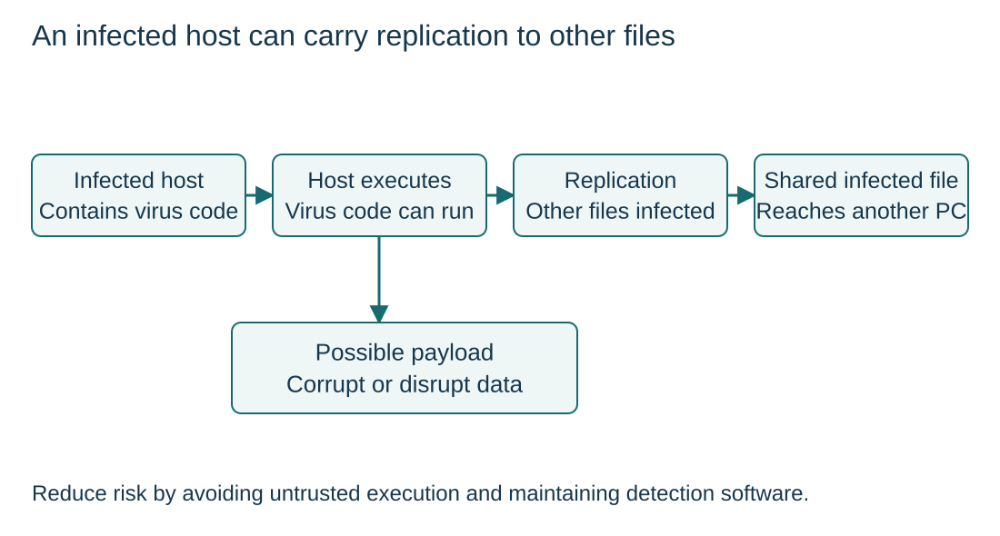

Viruses attach to a host and replicate
S6.04.A01
Visual overview
An infected host can carry replication to other files

Visual transcript
- A virus attaches to or modifies a host file or program.
- Executing the infected host can run the virus, which can replicate into further files and run a harmful payload.
- Sharing an infected host can carry it to another computer. Replication here depends on the host being executed, not merely existing in a folder.
Core explanation
Trace host-based replication
- Attach: Virus code attaches to or modifies a host file or program.
- Execute: Running the infected host can run the virus.
- Replicate: The virus can infect further files; a payload may corrupt, delete or disrupt data.
Control the route into execution
Shared files, networks and downloaded attachments can carry infected hosts to another computer. Avoid executing untrusted files and maintain detection software to reduce the risk.
Follow an infected host
- ArrivalAn infected program is downloaded.
- ExecutionThe user runs its host program.
- ReplicationViral code infects additional host files.
- ImpactData or normal processing may be damaged.